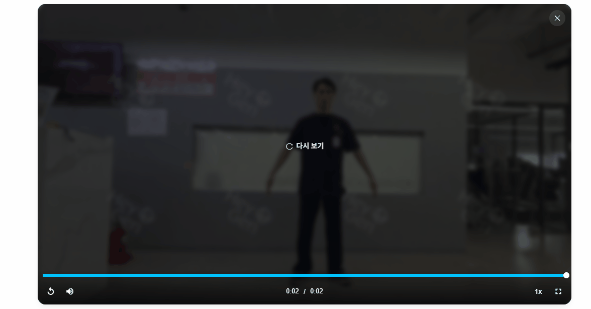
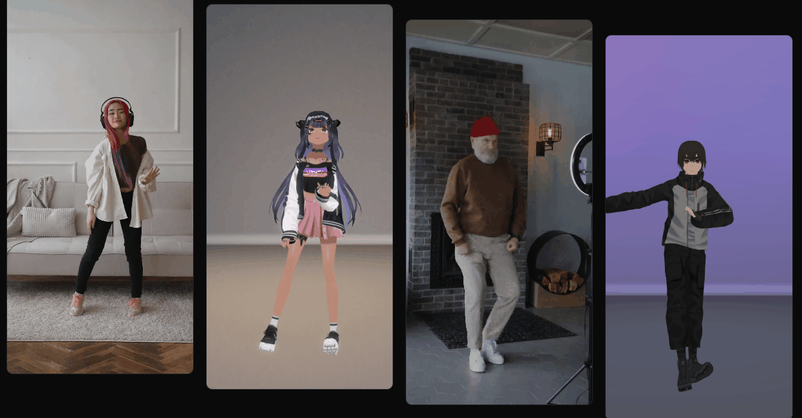
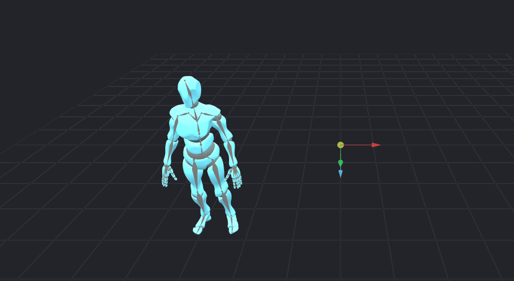
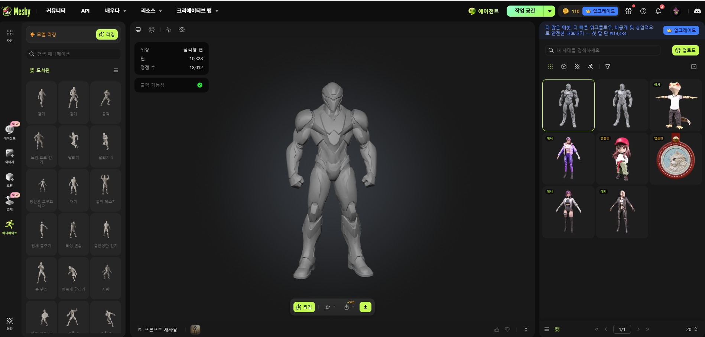
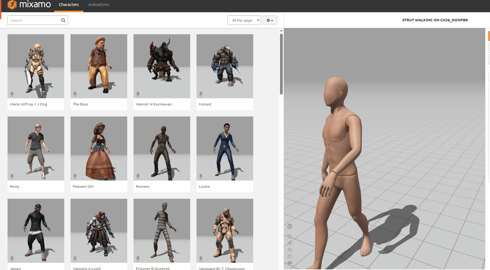

🎬 움직이는 캐릭터 AI 툴 조사 정리
운동(헬스) 동작 3D 영상 제작 관점에서 8가지 AI 툴 검토 결과
조사한 AI 툴들은 캐릭터 제작·간단한 모션 연출에 특화된 도구들입니다. "자극되는 근육 부위를 시각적으로 강조하는 전문 헬스 영상"까지 만들기에는 아직 한계가 있어, 이 부분은 전문가의 3D 제작 작업이 필요한 영역으로 보입니다.
🎨 Animated Drawings (메타 제작)
2D 낙서 움직이기 · 완전 무료
📌 요약
손그림·일러스트(PNG, JPG)를 업로드하면 AI가 관절을 자동 인식해 춤추고 걷게 만들어 주는 완전 무료 툴입니다. 로그인 없이 1분 만에 만들 수 있을 만큼 직관적이라, 간단한 2D 드로잉을 귀엽게 움직이고 싶을 때 최적입니다.
⚠️ 참고할 점
2D 그림을 가볍게 움직이는 데 특화된 툴이라, 입체적인 3D 운동 동작 영상 제작에는 적합하지 않습니다.
🗣️ HeyGen (D-ID 유사)
말하는 아바타 · SNS 숏폼용
📌 요약
캐릭터 이미지 한 장과 대사(텍스트/음성)만 넣으면 자연스럽게 입을 맞추고 눈을 깜박이며 말하는 영상을 만들어 줍니다. 한국어 TTS로 목소리 톤·감정까지 입혀져, 얼굴 위주의 설명 영상이나 쇼츠 콘텐츠에 유용합니다.
⚠️ 참고할 점
입 모양과 눈 깜박임 중심의 립싱크에 특화된 툴이라, 복근 운동처럼 전신을 크게 쓰는 동작 표현은 어렵습니다.
🎭 Adobe Character Animator (Puppet Maker)
웹캠 실시간 트래킹 · 방송용
📌 요약
카메라 앞에서 표정을 짓거나 움직이면 AI 트래커가 표정·몸짓을 실시간 추적해 2D 캐릭터를 움직여 줍니다. 어도비 제공 템플릿 캐릭터가 많아 클릭 몇 번으로 나만의 퍼핏을 꾸밀 수 있어, 라이브 방송·실시간 2D 애니메이션에 적합합니다.
⚠️ 참고할 점
표정을 실시간으로 따라 하는 방송용 2D 툴이라, 운동 동작 영상 제작과는 용도가 다릅니다.
🏃 Plask (플라스크)
영상 → 3D 모션 추출

📌 요약
사람이 움직이는 일반 영상(mp4)을 업로드하면 AI가 움직임을 3D 모션 데이터로 추출해 줍니다. 모션 캡처 장비 없이 스마트폰 촬영본만으로 수준 높은 3D 모션을 만들 수 있어 게임 개발·3D 애니메이션 제작에 유용합니다.
⚠️ 참고할 점
결과물이 완성 영상이 아닌 '움직임 뼈대 데이터'라서, 별도의 3D 캐릭터와 후반 작업이 추가로 필요합니다.
🤖 3D AI Studio
텍스트/이미지 → 3D 캐릭터 생성
📌 요약
텍스트 프롬프트나 참고용 2D 사진 한 장으로 3D 모델을 생성해 줍니다. 외형뿐 아니라 관절 뼈대를 심는 리깅(Rigging)과 기초 애니메이션까지 AI가 한 번에 처리해, 나만의 3D 캐릭터를 빠르게 만들 때 좋습니다.
⚠️ 참고할 점
결과물을 3D 캐릭터 데이터 파일(FBX/GLB)로만 제공하고, 바로 재생 가능한 MP4 동영상 파일로는 받을 수 없습니다.
👾 Meshy (메시 AI)
Generative 3D · 오토 리깅
📌 요약
전 세계에서 가장 많이 쓰이는 대표적인 generative 3D AI 툴로, 한국어 지원이 잘 됩니다. 스케치나 텍스트만으로 몇 분 만에 픽사·디즈니 스타일의 귀여운 3D 캐릭터를 만들고, Animate 메뉴에서 30초 만에 오토 리깅 후 모션 라이브러리(걷기, 춤 등)를 입힐 수 있습니다.
⚠️ 참고할 점
3D AI Studio와 마찬가지로 결과물을 3D 캐릭터 데이터 파일(FBX/GLB)로만 제공하고, 바로 재생 가능한 MP4 동영상 파일로는 받을 수 없습니다.
💃 Adobe Mixamo (믹사모)
리깅 + 모션 입히기 · 완전 무료
📌 요약
3D 캐릭터 파일(FBX, OBJ)을 올리고 턱·손목·팔꿈치·무릎 위치만 찍어주면(오토 리깅) 수천 가지 움직임(춤, 달리기, 전투 등)을 사이트에서 바로 입혀볼 수 있는 어도비의 완전 무료 서비스입니다. 움직임 퀄리티는 자연스러운 편입니다.
⚠️ 참고할 점
① 다운로드는 FBX/DAE 애니메이션 파일로만 제공되며 MP4 영상 추출은 지원하지 않습니다 — 영상으로 만들려면 블렌더 등 별도 툴에서 불러와 렌더링해야 합니다. ② 에어 스쿼트·푸시업 등 기본 맨몸 운동 모션은 일부 있지만, 운동처방에 필요한 다양한 동작(크런치, 기구 운동, 재활 동작 등)을 갖춘 수준은 아닙니다. ③ 자극되는 근육 부위를 색상으로 강조하는 기능도 지원하지 않습니다.
🦊 VRoid Studio (브이로이드 스튜디오)
애니메이션풍 3D 캐릭터 제작 · 완전 무료
📌 요약
일본 서브컬처 애니메이션·웹툰·버추얼 유튜버(VTuber) 스타일 3D 캐릭터 전용 제작 툴입니다. 완전 무료이며, AI 슬라이더와 마우스 드로잉만으로 3D 모델링 지식 없이도 고품질의 예쁜 애니메이션 캐릭터를 완성할 수 있습니다.
⚠️ 참고할 점
캐릭터 '제작' 전용 툴이라 외형까지만 만들 수 있고, 움직임을 넣으려면 Mixamo 같은 별도 툴과의 연동이 필요합니다.